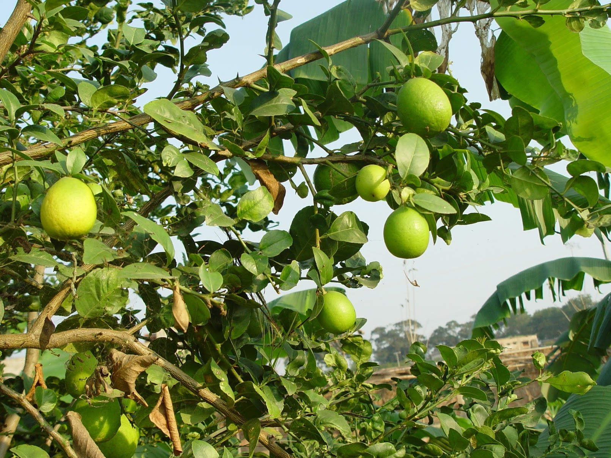
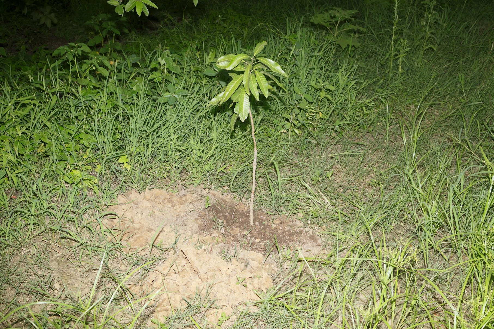
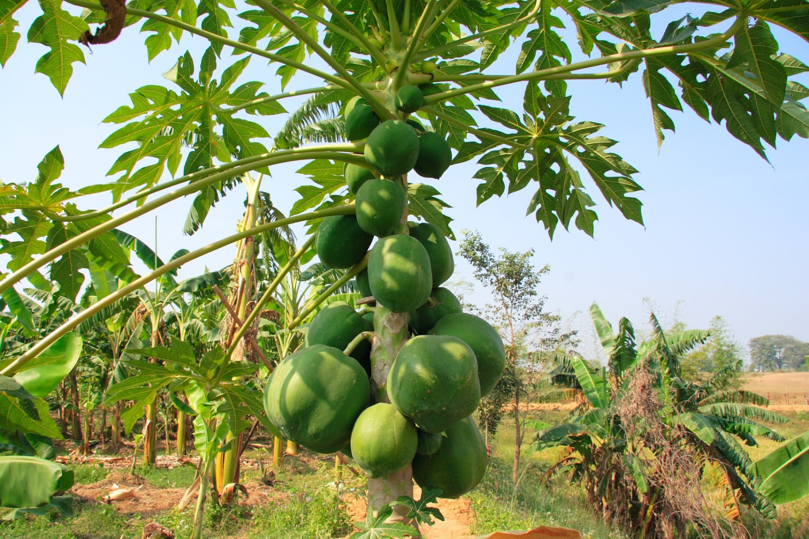
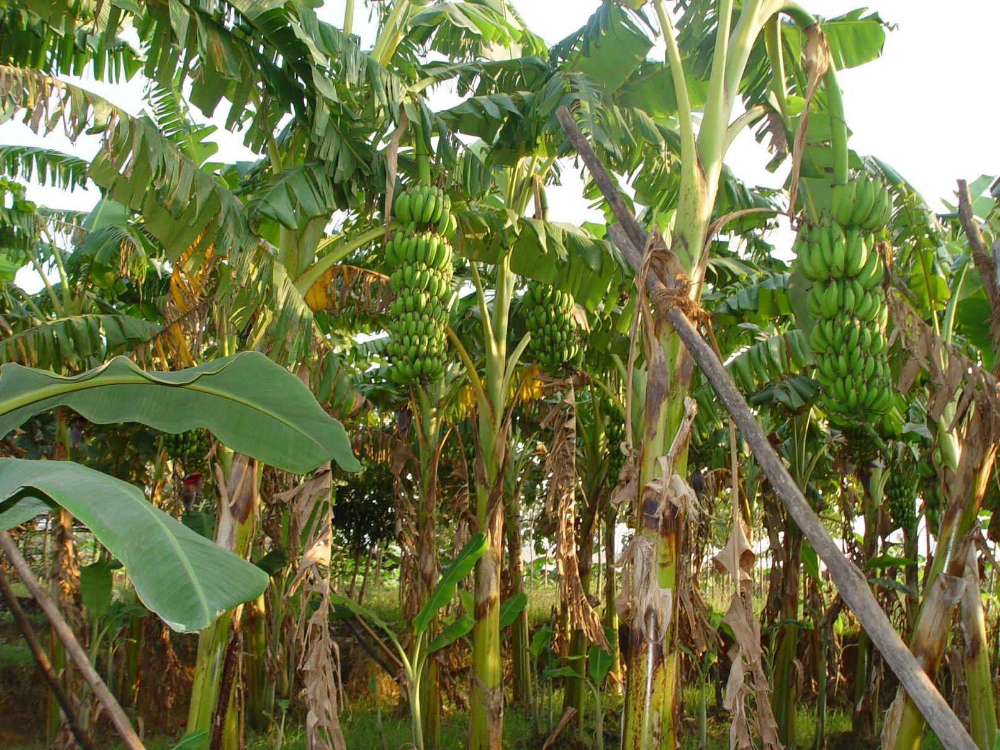

Prakriti Biotech Farm
Prakriti Biotech Farm is a model of sustainable agriculture and environmental stewardship, inspired by traditional farming practices and modern scientific innovation. Founded by Col. Binay Kumar (Retd), the farm serves as a hub for organic crop production, community learning, and livelihood development.

Our Practices
- Organic Agriculture: Producing chemical-free crops while maintaining soil health.
- Water Conservation: Innovative irrigation techniques reduce water usage and promote sustainability.
- Renewable Energy: Solar-powered pumps and energy-efficient infrastructure.
- Community Training: Workshops on farming techniques for local farmers and students.
- Research & Innovation: Experimenting with high-yield crops and eco-friendly farming technologies.

Organic Vegetables
Seasonal vegetables grown without pesticides, ensuring healthy food for local communities.

Herbs & Medicinal Plants
Locally-sourced herbs cultivated for both traditional remedies and modern research.



Fruit Orchards
Fruit trees planted to promote biodiversity and support nutritional needs of the region.
Visit or Collaborate
We welcome students, researchers, and community members to visit the farm, participate in workshops, or learn about sustainable farming practices.